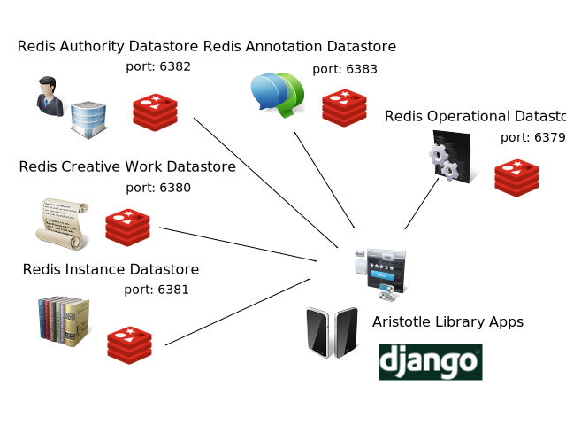

Colorado College's Tutt Library is a small, urban, academic library serving the needs of over 2,000 students along with faculty and staff in Colorado Springs, Colorado. As a member of the Colorado Alliance of Research Libraries, a consortium of academic and public libraries in Colorado and Wyoming, we participate in a union catalog comprising the collections of our member institutions. We operate our own instance of III's Millennium ILS, and our Islandora/Fedora Institutional Repository is hosted through the Colorado Alliance's repository service. Like most academic libraries, our material budgets have shifted from physical to electronic resources and, as a consequence, we are doing more batch loading of MARC records for these electronic resources and less original or copy-cataloging of print material.
With the quality of vendor-supplied MARC records varying considerably, the old workflows to manipulate and load records into our legacy ILS were often long and laborious processes. By scripting the manipulation of these MARC records with Python and the pymarc Python module [1], with a web front-end in Django, we brought considerable time savings to our cataloging staff. This lead to a second Django application project that enabled senior students to self-submit their thesis or final essay, along with any supporting datasets, to our Fedora Commons digital repository.
A parallel effort was started as we looked at various commercial and open source options for a new discovery layer. Given monetary and resource constraints, along with the worry of maintaining multiple codebases in different programming languages and environments, the library decided to fork Kochief, a Django-based discovery project. This decision led to the release of Aristotle, the Tutt Library discovery-layer project available on Github [2] under the Apache 2 open source license.
In 2011, we started to explore using Redis, a popular NoSQL technology, to represent bibliographic and operational information. This research lead to the FRBR-Redis datastore project that was the topic of a 2012 Code4Lib presentation [3]. Using the Library of Congress Bibliographic Framework Initiative's A Bibliographic Framework for a Digital Age [4] as starting, high-level requirements for the FRBR-Redis datastore, we tested the suitability of using Redis with over 850 unit tests representing MARC21, MODS, and VRA metadata structured as FRBR Work-Expression-Manifestation-Item entities with a variety of Redis data primitives.
One of the trends highlighted at the 2012 Code4Lib conference was the growing importance of mobile devices, both in usage by library patrons, and by the limitations and opportunities presented by developing applications. This caused us to rethink how we offered access and management to bibliographic information from a desktop/rich web "discover" model to a simplified mobile app user interface used in mobile and tablet native applications on such devices as Apple's iOS and Google's Android operating system. We started experimenting with using Twitter's Bootstrap support for responsive web design, to build simplified HTML5 apps that were much closer to the design aesthetic of a mobile and tablet application. The first app we released was call number app that provides an embedded widget into our Discovery as well a standalone app targeted for mobile and tablet devices but fully usable by modern desktop web browsers. This app was the beginning of the Aristotle Library Apps project [5] and can viewed online at http://discovery.coloradocollege.edu/apps/call_number.
Since 2011, we continued to monitor the modeling work being done by the Bibliographic Framework Transition Initiative. As we became more experienced with using Redis, the initial implementation of a Redis FRBR datastore, with a single Redis instance using multiple databases, wasn't as flexible as having each each of the first group of FRBR entities (Work, Expression, Manifestation, and Items) run as a separate Redis instance on a different port on the same server. In September 2012, Sally McCallum in an IGeLU presentation [6], offered the first glimpse of a new bibliographic model she referred to as MARCR, for MARC Resource. This new model supports RDA and FRBR but the core entities are different with just four; Work, Instance, Annotation, and Authority. Because of Redis's flexibility, we were quickly able to modify our existing FRBR Redis datastore key structure to follow this new model using RDA. A primer on this new model was published November of 2012 [7], with a new name of BIBFRAME with minor changes from September introduction, namely the Work entity becomes Creative Work and the namespace for the model is formally BIBFRAME. The BIBFRAME Redis datastore is now a separate open-source project licensed under the GNU General Public License 2 and includes documentation, Redis server configuration files for each of the BIBFRAME entities, and LUA server-sides scripts [8].
Redis, a key-value datastore, is one of the many new NoSQL data technologies that offer alternative models for data representation and use. Redis supports data persistence in two ways: an RDB mode that saves the dataset at periodic intervals, and an AOF mode that saves the dataset with every write operation. While there are advantages and disadvantages to each approach [9], most libraries could employ a combination of RDB mode for bibliographic records and AOF mode for library transactional data like circulation statistics.
Redis is fundamentally different from the flat-file structure of a MARC record and the relational databases of more traditional library systems. The flexibility of Redis allows for the rapid development of multiple apps by supporting different information schemes and structures within a single datastore. The manner in which a Redis key is constructed allows for the embedding of semantic or heuristic information about the data structure in its naming structure. Redis assumes that related data use a key naming pattern, and even provides a global function to increment the key ID.
Another important design consideration when using Redis is the type of data primitive to associate with a key. The simplest value is an atomic string. The Redis list is a collection primitive which stores unordered and duplicate string values. The Redis set and sorted set store unique string values, with the sorted set associating a sort weight with each value in the sorted set. If a weight of 0 is used in a sorted set, Redis does a lexical sort based on the string values in the set. The last Redis data primitive is a hash. A Redis hash associates multiple sub-keys with a single Redis key and with the HGET command returns the value associated with that sub-key.
Redis is not a relational database and it would be suboptimal to attempt to replicate an RDBMS. In Redis, the key is the fundamental structure, not a table-row as in an RDBMS. Redis keys can also serve as a string value for other keys in the datastore, providing a sort of crude SQL JOIN, but offering more flexibility in representing relationships between keys in a manner that would be difficult or impossible to replicate in an RDBMS. The downside is that referential integrity between different tables is not built into Redis. Eventual consistency can be achieved either through application logic or through strategies involving a combination of Redis server commands.
The Redis string, set, sorted set, list and hash data primitives all offer different ways to represent library information in the Redis server. Redis also provides a number of server and primitive-specific commands that ease application development, including EXIST and TYPE. For the EXIST command, a string is passed in as a parameter and a boolean is returned confirming whether the string is a key in the datastore. The TYPE command, when passed in a key string, returns the type of Redis data structure that is represented by the key or a null value if it doesn't exist.
For large datasets that may not fit into RAM; the lead developer on the Redis project, Salvatore Sanfilippo, recommends using a presharding [10], as a way to break up the datastore among different Redis instances. The naming schema used by the Aristotle Library Apps and BIBFRAME Datastore project can easily support presharding for use in large collections, although for the time being, a single Virtual Machine with 4G of RAM is more than sufficient to run all of Colorado College's BIBFRAME Datastore Redis instances. The following graphic shows our Colorado College BIBFRAME Datastore set-up.

Figure 1: Colorado College's BIBFRAME Datastore set-up
The first iteration of a Redis bibliographic datastore used a naming schema based FRBR and RDA , using a similar notation as XML namespaces, to create a collection of keys to represent values and relationships with other entities in the datastore.
For example, in the Aristotle Library Apps project, RDA Core FRBR entities and attributes are extracted from MARC records following the MARC-to-RDA mappings provided in the ALA's RDA Toolkit [11] that are then organized into Redis key collections following a pattern that maps to BIBFRAME linkable information resources like Creative Work, Instance, Authority, and Annotation. The following table show one such BIBFRAME Redis key collection for a CreativeWork and its supporting Redis keys for that entity. The phonetic, rda:variantTitleForTheWork:sort subkeys and subvalues in the bibframe:CreativeWork's rda:Title support the Title Search App and their use will be explained in a later section of this article.
| BIBFRAME Datastore Redis Key | Redis Data Primitive | Value |
|---|---|---|
bibframe:CreativeWork:10089 |
Hash |
{'created': '2012-11-26T16:22:49.555165'}
|
bibframe:CreativeWork:10089:rda:Title |
Hash |
{'phonetic': '0TNAFARPNARTANANTRTKXNTPLL0KKFPNTNK',
'rda:preferredTitleForTheWork': 'The dawn of European art :
an introduction to Palaeolithic cave
painting',
'rda:variantTitleForTheWork:sort': 'dawn of European art : an
introduction to Palaeolithic cave
painting'}
|
bibframe:CreativeWork:10089:bibframe:Instances |
Set |
['bibframe:Instance:10089']
|
The BIBFRAME Datastore can easily supports other metadata formats and values. Continuing the previous example, if we wanted to use MODS or Dublin Core instead of RDA, the BIBFRAME Datastore key could look like bibframe:CreativeWork:10089:mods:titleInfo with each of the MODS titleInfo sub-elements as hash key-values pairs for an individual CreativeWork. Likewise, a Redis key like bibframe:CreativeWork:10089:dc:title could either be simple static string or could be a HASH like the current rda:Title key used in the current iteration of the BIBFRAME-Datastore project. We could even have all three (or as many different keys as desired) exist in the same Redis datastore instance.
Meanwhile, financial information, such as material orders and invoice information stored in our ILS, is extracted and added to the Redis datastore for reporting and budget forecasts. We even store the library hours as Redis string in the datastore for use in a standalone app and as a JSON data feed for our discovery layer.
Redis datastore interactions are abstracted via Python classes, which are built with the redis-py module [6]. If the app developer needs custom data storage or extended Redis functionality, Python custom classes can extend existing classes through direct manipulation of the datastore.
While native apps generally run faster and more closely follow the recommended user interface guidelines for their respective platforms, the Tutt Library does not have the resources to maintain multiple app development environments. Thankfully, with evolving web standards and protocols, coupled with the development of CSS and JavaScript libraries, fast and easy-to-use HTML5 apps can be created that are more universal and can run on multiple mobile and tablet platforms as well as on personal computers running more modern web browsers that support HTML5. The goal of responsive web design, as expressed in the original article on A List Apart:
Rather than tailoring disconnected designs to each of an ever-increasing number of web devices, we can treat them as facets of the same experience. We can design for an optimal viewing experience, but embed standards-based technologies into our designs to make them not only more flexible, but more adaptive to the media that renders them. In short, we need to practice responsive web design. [7]
The Aristotle Library App project uses the popular web framework Bootstrap as the basis for the user interfaces that respond and adjust for different client devices and displays. It is prohibitively expensive and impossible for a small library with limited staff and resources to test out apps on all of the different platforms, web browsers, and devices used by our users. By focusing on the most popular and available devices in the library (Windows 7, Macintosh, iOS, and some Android phones and tablets), the Tutt Library targets specific functionality needed by its patrons and staff. The design intention of this HTML5-based app development environment is that creating a new app should be roughly equivalent in difficulty to building a simple website leveraging librarian and staff's pre-existing competencies with such tools as Dreamweaver and CMS systems. While there is training involved in educating staff about Bootstrap and HTML5, the training burden and requirements for app development is considerably less than if the library tried to develop native apps for the iOS and Android environments.
The majority of apps in the initial Aristotle Library App project are categorized as Access and Discovery Apps, which allow users to find and access the library resources and more general information about the library that is stored in the Redis datastore. Access and Discovery Apps broadly address the generic tasks by users to find, identify, select, and obtain resources as expressed in the FRBR specification [14]. Also included in this category are apps, like the Tutt Library's Hours App that informs a patron if the library is open or closed, that are for primary patron use. While not bibliographic in nature, the Tutt Library Hours App addresses one of the top questions the Tutt Library receives from patrons.
The Call Number App was the first app released and served as the catalyst for the entire Aristotle project. As we worked on the discovery layer, another librarian was inspired by a feature in Stanford University's Searchworks (built with Blacklight and Hydra) that allowed a patron to see which call numbers were near each other in the library's stacks. While investigating Stanford's implementation based on Solr, we realized a simplified data model could be used with Redis. To create the type of sorted indexes needed for this app, normalized Library of Congress, SuDoc, and local call numbers were added as weights to Redis sorted sets. Once we had embedded the Call Number App into the discovery layer, we explored the further development of dedicated, simplified apps for common searches. These independent apps could be used in larger systems, like the discovery layer or the library's website, through the use of JSON APIs and raw html.
When the college adopted a CMS incapable of building a dynamic feed of the library's hours of operations for the library's homepage, we felt that a dedicated app with a JSON feed and hours data stored in Redis would work instead. The Library Hours App stores dates and hours in a string using Redis bit operations commands. Each day has a unique key with the following pattern: "library-hours:YYYY-MM-DD", with the value being a 96-bit string with each bit representing a quarter hour with bit offset 1 representing 00:00 to 00:14, bit offset 2, 00:15-00:29, etc. for each quarter hour of a twenty-four hour day. Bits set to zero (the default) means the library is closed, the bit set to 1 means the library is open for that quarter hour.
To see if the library is open, the Hours App queries the library's operational Redis datastore by using a Redis GETBIT command as demonstrated in this code snippet from the Hours App's redis_helpers.py [??]:
def is_library_open(question_date=datetime.datetime.today(),
redis_ds=redis_ds):
"""
Function checks datastore for open and closing times, returns
True if library is open.
:param question_date: Datetime object to check datastore, default
is the current datetime stamp.
:param redis_ds: Redis datastore, defaults to module redis_ds
:rtype: Boolean True or False
"""
offset = calculate_offset(question_date)
status_key = question_date.strftime(library_key_format)
return bool(int(redis_ds.getbit(status_key,offset)))
The patron user interface for the Hours App displays a simple message with the library's current hours. If the library is closed, the app displays the next available date and time when the library is open. With just using 365 keys per year, one for each day, this Redis structure easily supports the requirements for the Hours App. administrative user interface for authenticated library staff to add or modify the hours data structures in Redis.
The second category of apps are for productivity, developed to either manage or report on resources in the collections represented in the FRBR Redis datastore. These apps require the user to first authenticate, then, depending on the app and the user's authorizations, allow for the manipulation or reporting of library information, which includes the native BIBFRAME entities in the datastore. In the Orders App, order records were imported from Tutt Library's legacy ILS into the FRBR Redis datastore. By doing so, we freed this information from the proprietary ILS vendor that tightly binded order information to the MARC bibliographic record (even going so far as to create custom 9xx fields for order information). By separating the order information into Redis sets with each invoice and order as distinct Redis keys, visualizations and budget reporting became much simpler. Before we had this tool we would have to export this data from the ILS and extract the data from the MARC21 record, then clean it up before importing it into Microsoft Excel for analysis of this critical aspect of library operational information.
We have also developed a productivity app for a collection of Fedora Commons utilities used by library staff to move objects around in the digital repository, batch ingestion of objects, and to apply a metadata batch update to one or more Fedora objects. While this Fedora Commons app does not directly use the BIBFRAME entities in our Redis datastores, the app has streamlined the work-flow of multiple staff in the library that are involved with a digital repository. The Aristotle Library Apps project is flexible enough to accommodate workflows with other library systems, like our Fedora Commons digital repository.
The Tutt Library uses its Call Number, Hours, Title Search, Subject, and Creator apps to augment the library's website and discovery layer. These are publicly available, along with the Article and Book Search Apps, at http://discovery.coloradocollege.edu/apps/. The same JSON interface that the Call Number App uses to populate a shelf-browser is also used in the record view in the discovery layer. The Hours App provides an embedded HTML snippet for inclusion in various locations in the library's website.
The next wave of app development will focus on material circulation, including check-out, course reserves, and inventory. The main users of these workflows will be in the library, serving as testers and consultants for these productivity apps while the systems group develops and releases them. In keeping with agile philosophy, each app should be simple enough to design, implement, and start testing within a three-to-four week sprint, which nicely coincides with the current academic block calendar at Colorado College.
Currently, authentication is provided through a custom Django authentication backend developed to interface with the Tutt Library's legacy ILS. As the library transitions from a traditional ILS to a modular apps model, we plan to use the identification credentials that primary patrons already have as members of the college community. As with many organizations, Colorado College uses Microsoft's ActiveDirectory to manage authentication tasks for networked resources on campus. The next piece necessary for an enterprise-level app ecosystem will be an authentication module leveraging Django's rich and mature LDAP support.

Concern over interoperability was brought up as a challenge to any radical technology change as the Tutt Library moved to an app model. The regional Colorado Alliance of Research Library's Prospector union catalog, in which Colorado College is both an active lender and borrower, supports the college's block plan, where students take intense, 3 1/2 week courses for college credit. With students needing research material promptly, Tutt Library strives to deliver to students, faculty, and staff as promptly as possible, preferably under 72 hours. The Prospector-based ILL service is critical to meet this tight deadline for materials. Any replacement or legacy ILS cannot diminish that service.
Maintaining record-level interoperability should be relatively easy in the Library App Portfolio as long as the MARC utilities and productivity apps are in active development. The challenge is in integrating material requests and real-time circulation status into the proprietary system the Alliance currently uses for the Prospector. A strength of Redis is its ability to store and serve large volumes of data, as it has done for sites such as Github, Engine Yard, Craigslist, Disqus, and Stack Overflow [9]. The library is in early discussions with the Alliance about expanding the Aristotle Library Apps project to scale for the millions of records.
Some interesting network topologies for bibliographic information may be possible when using Redis as the underlying datastore and FRBR/RDA as the organizing principle. For example, the Alliance may host the shared Work and Expression datastores, then subscribe to Manifestation and Item datastores managed and hosted locally at each institution, at the Alliance, or at a commercial cloud provider. Each institution could also use the Alliance's hosted Work and Expression datastores in their own Access and Discovery Apps.
Redis Cluster is under active development, with plans to have a stable release by the end of 2012. The library and the Alliance are exploring grant opportunities to fund the development and support for a new bibliographic datastore that will scale to hundreds of millions of FRBR entities.
Jeremy Nelson (Jeremy.Nelson@ColoradoCollege.edu) is the Metadata/Systems Librarian at Colorado College. He is responsible for ensuring the Tutt Library technology that students, staff, and faculty at Colorado College depend on is available when they need it both on and off campus. He is also responsible for the cataloging department, ensuring that electronic and physical material acquired by the library is cataloged correctly and is positioned for future further use.